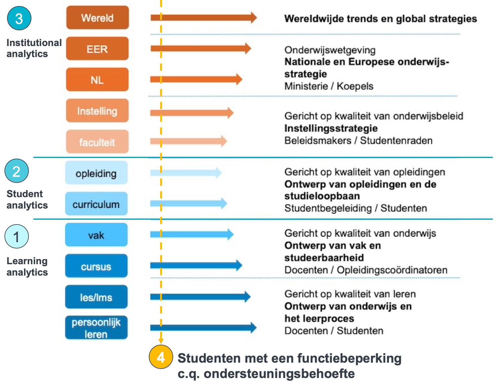
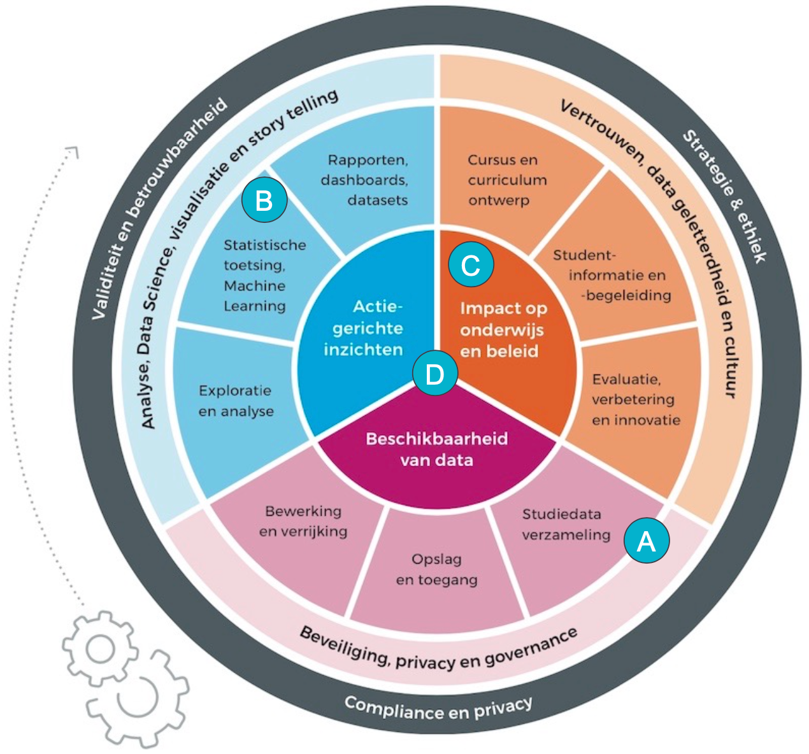

Onderzoek
De Haagse Hogeschool
Hoe maakt het lectoraat Learning Technology & Analytics impact?
- De beoogde impact van het lectoraat is het bevorderen van gelijke kansen voor studenten in het hoger onderwijs om zichzelf te kunnen ontwikkelen tot wat de maatschappij van hen vraagt.
- Er zijn vier onderzoekslijnen: 1) learning, 2) student en 3) institutional analytics + 4) onderzoek studieverloop en -succes van studenten met een ondersteuningsbehoefte.
- Het lectoraat maakt impact door zich binnen elke onderzoekslijn te richten op a) selectie van relevante studiedata, b) methoden van analyse, c) praktijktoepassing van oplossingen, mate van adoptie en effectmeting, en d) communicatie en disseminatie.
- Ik draag bij aan de doelen van het kenniscentrum Global & Inclusive Learning door mijn collega’s te vinden op onderliggende waarden, wederzijdse nieuwsgierigheid en complementariteit in ons onderzoek.
Download de Basispresentatie Learning Technology & Analytics.
Vier onderzoekslijnen
Om zicht te krijgen op de ontwikkeling van studenten in hun onderwijs onderzoeken we studiedata in drie onderzoekslijnen (learning, student en institutional analytics) en een integrale lijn voortzetten op onderzoek naar studenten met een ondersteuningsbehoefte (inclusion analytics).

Methodische impact
Binnen elke onderzoekslijn richten we ons op A) selectie van relevante studiedata, B) methoden van analyse, C) praktijktoepassing van oplossingen, mate van adoptie en effectmeting en D) communicatie en disseminatie.
Met name de selectie van relevante studiedata en de adoptie en effectmeting zijn nog beperkt ontwikkelde gebieden van onderzoek in learning analytics.

Vrije Universiteit Amsterdam
Drie onderzoekslijnen
In het onderzoek van de Vrije Universiteit breiden we het eerdere promotie-onderzoek naar het studieverloop en studiesucces van studenten met autisme uit binnen de vakgroep Klinische Ontwikkelingspsychologie van de Faculteit der Gedrags- en Bewegingswetenschappen.
We zullen een vergelijkbaar onderzoek herhalen voor studenten met ADD/ADHD en daarnaast het succes van studenten met autisme onderzoeken na het derde studiejaar. Tot slot zal ik een bijdrage leveren aan onderzoek naar hoger onderwijs binnen het Nederlands Autisme Register (NAR).